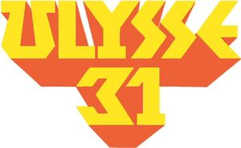

Trade Mark Journal No.2025/031 1 August 2025
WO0000001851012 (9,16,18,20,21,24,25,27,28,38,41)
Office of origin: France
Date of International Registration:18 November 2024
Date of designation in the UK:
18 November 2024

The mark contains the colours yellow and orange.
Stylized letters in yellow and orange shading.
International priority date claimed: 21 July 2024
(France)
(5071370)
- Class 9
- Audiovisual teaching apparatus; teaching apparatus; school apparatus; electronic agendas; decorative magnets; baby monitors (audio and video devices for monitoring babies); portable media players; digital photo frames; frames for photographic transparencies; cinematographic cameras; camcorders; video game cartridges; headphones; virtual reality headsets; video cassettes; spectacle chains; USB flash drives; hard covers for smartphones; covers for tablet computers; straps for mobile telephones; spectacle cords; animated cartoons; phonograph records; compact disks [audio-video]; optical compact disks; optical disks; floppy disks; video screens; projection screens; tape recorders; containers for contact lenses; spectacle cases; cases for smartphones; downloadable music files; downloadable image files; sound recording strips; exposed films; exposed films; exposed cinematographic films; sleeves for laptops; computer printers; computer hardware; holograms; carriers for dark plates [photography]; binoculars; readers [data processing equipment]; cassette players; compact disc players; DVD players; optical lenses; contact lenses; contact lenses; software [recorded programs]; game software; eyewear; spectacles [optics]; 3D spectacles; sunglasses; video recorders; diving masks; mirrors [optics]; devices for editing cinematographic films; spectacle frames; hands-free kits for telephones; computers; notebook computers; smartphones; laptop computers; selfie sticks [hand-held monopods]; cameras [photography]; electronic key fobs being remote control apparatus; radiotelephony sets; recorded computer programs; computer programs [downloadable software]; telephone answering machines; humanoid robots with artificial intelligence; mouse [computer peripheral]; sound recording carriers; cordless telephones; mobile telephones; portable telephones; mouse pads; telephone apparatus; television apparatus; compact discs (CDs); DVDs; digital recording media; calculating machines; software (recorded programs); computer peripherals; digital personal stereos; headphones, virtual reality headsets; spectacles (optics); smart cards [integrated circuit cards]; bags adapted for laptops; smart watches; electric batteries; protective helmets for sports; wet suits for water-skiing; video games (software); compact discs (audio, video); digital versatile disc.
- Class 16
- Paper, cardboard; printed matter; bookbinding material; photographs; stationery; adhesives for stationery or household purposes; artists' materials; paintbrushes; typewriters and office requisites (except furniture); instructional or teaching material (except apparatus); plastic materials for packaging (not included in other classes); printing type; printing blocks; steel (letters); steel (feathers); address-printing machines; posters; poster holders of paper or cardboard; franking mail (machines for -) (office machines); staples for offices; pen clips; albums; almanacs; starch (adhesive) for stationery or household use; hand-rests for painters; aquarelles; writing slates; modeling clay; atlases; self-adhesive tapes for stationery or household use; stickers [stationery]; paint trays; cigar bands; chart pointers, non-electronic; adhesive bands for stationery or household purposes; gummed tape [stationery]; ink sticks; bibs of paper; loose-leaf binders; balls for ball-point pens; tickets; printers' blankets not of textile; drawing pads; pads [stationery]; spools for inking ribbons; timber paper; boxes of cardboard or paper; posters, cards, books, newspapers, prospectuses, brochures; wristbands for the retention of writing instruments; stapling presses [stationery]; pamphlets; writing brushes; office articles (except furniture); blotters; flower-pot covers of paper; stamps [seals]; seals (stamps) (media for-); composing frames [printing]; writing or drawing books; calendars; tracing patterns; notebooks; square rulers; cards; trading cards other than for games; musical greeting cards; cardboard; wood pulp board [stationery]; cardboard articles; cardboard hat boxes; perforated cards for Jacquard looms; catalogs; tags for index cards; regenerated cellulose (in sheets) for packaging; song books; folders for papers; painters' easels; numbers [type]; chromos; newsletters; sealing wax; modeling wax not for dental use; binders [office requisites]; address stamps; printing blocks; cases for stamps [seals]; cabinets for stationery [office requisites]; apparatus for applying adhesive to photographs; adhesives for stationery or household use; glue for stationery or household purposes; compasses for drawing; composing sticks; letter trays; conical paper bags; paper cutters [office supplies]; biological samples for use in microscopy [teaching materials]; histological sections for teaching purposes; wrappers [stationery]; writing chalk; marking chalk; chalk for lithography; tailors' chalk; pencils; slate pencils; electrical or non-electrical machines for sharpening pencils; cream containers of paper; paper clasps; rollers for typewriters; transfers (decalcomanias); paper shredders for office use; drawing supplies; drawing instruments; drawings; paper coasters for decanters; mats for beer glasses; diagrams; adhesive tape dispensers [office requisites]; apparatus for laminating documents [office requisites]; finger-stalls [office requisites]; document files [stationery]; duplicators; etchings; etching needles; writing supplies; placards of paper or cardboard; inkstands; writing models; shields [paper seals]; erasing compositions; writing board erasers; elastic bands for offices; packaging paper; packaging of cardboard or paper for bottles; punches [office requisites]; inks; correcting ink [heliography]; inkwells; signboards of paper or cardboard; bottle envelopes of cardboard or paper; office machines for closing envelopes; envelopes [stationery]; drawing squares; hand towels of paper; pen wipers; hand-held labeling apparatus; labels, not of textile; fabrics for bookbinding; stencil cases; announcement cards [stationery]; bunting of paper; absorbent sheets of paper or plastic for foodstuff packaging; plastic bubble packs for wrapping or packaging; paper sheets [stationery]; humidity control sheets of paper or plastic for foodstuff packaging; index cards [stationery]; cords for bookbinding; filter materials (paper); paper coffee filters; flyers; forms; school supplies; charcoal pencils; erasing shields; stencils [stationery]; galley racks [printing]; electrotypes; terrestrial globes; gluten [glue] for stationery or household purposes; watercolor saucers for artists; rubber erasers; gums [adhesives] for stationery or household purposes; scrapers [erasers] for offices; engravings; hectographs; printed timetables; moisteners for gummed surfaces [office requisites]; isinglass for stationery or household purposes; pictures; printing type; writing instruments; paintings (pictures), framed or unframed; aquarelles, drawings, drawing instruments; handkerchiefs of paper, face towels of paper, table linen of paper, bags and sachets (envelopes, pouches) for packaging (of paper or plastic materials); portable printing sets [office requisites]; printed matter; teaching material (except apparatus); newspapers; comic books; letter paper; table linen of paper; lithographs; lithographic works of art; books; booklets; typewriters [electric or non-electric]; manifolds [stationery]; handbooks [manuals]; architects' models; marking pens [stationery]; packaging material made of starches; plastics for modeling; pencil leads; modeling material; embroidery patterns; handkerchiefs of paper; moisteners [office requisites]; molds for modeling clays [artists' materials]; tablecloths of paper; writing cases [sets]; paper bows; numbering apparatus; oleographs; binding strips [bookbinding]; sealing wafers; palettes for painters; pantographs [drawing instruments]; stationery items; stationery [writing cases]; paper; copying paper [stationery]; tracing paper; carbon paper; silver colored paper [stationery]; drawer liners of paper, perfumed or not; filter paper; toilet paper; luminous paper; papier mâché; waxed paper; parchment paper; paper for recording machines; electrocardiograph paper; paper for radiograms; Xuan paper for Chinese painting and calligraphy; pastels [crayons]; modeling paste; sewing patterns; graining combs; brushes for painters; paint boxes (school articles); extensible plastic cling film for palletization; plastic film for wrapping; office perforators; periodicals; photographs [printed]; mounting brackets for photographs; photoengravings; ink stones [ink reservoirs]; lithographic stones; paper clips; money clips; French curves; drawing boards; engraving plates; prints [engravings]; clipboards [office requisites]; blueprints; address plates for addressing machines; trays for sorting and counting money; paper creasers [office requisites]; nibs; nibs of gold; pens [office requisites]; pen cases; document holders (stationery); passport holders; stencil plates; tracing needles for drawing purposes; duplicating machines and apparatus; holders for checkbooks; chalk holders; pencil holders; pencil lead holders; pen holders; portraits; postcards; paperweights; non-electric credit card imprinters; paper tapes or cards for recording computer programs; prospectuses; printed publications; drawing pins; ledgers [books]; drawing rulers; printers' reglets; bookbinding apparatus and machines (office supplies); bookbindings; articles for bindings; indexes; graphic representations; graphic reproductions; magazines [periodicals]; table mats of paper; house painters' rollers; adhesive tapes for stationery or household purposes; correcting tapes [office requisites]; Paper ribbons; inking ribbons; inking ribbons for computer printers; typewriter ribbons; garbage bags of paper or of plastics; bags [envelopes, pouches] of paper or plastics, for packaging; seals (stamps); bookends; tissues of paper for removing make-up; table napkins of paper; face towels of paper; place mats of paper; bookmarkers; greetings cards; desk mats; statuettes of papier mâché; steatite [tailor's chalk]; stencils; pens; stands for pens and pencils; blackboards; framed or unframed paintings [pictures]; arithmetical tables; pencil sharpeners, electric or non-electric; inking pads; drawing T-squares; stamping plates; sealing stamps; stamps [seals]; postage stamps; ruling pens; tracing cloth; cloth for bookbinding; inking sheets for document reproducing machines; inking sheets for duplicators; gummed cloth for stationery purposes; canvas for painting; typewriter keys; transparencies [stationery]; drawing sets; cardboard tubes; typographic characters; patterns for making clothing; apparatus for marking; sheets of viscose for packaging; cards, postcards, books and particularly youth books, newspapers, periodicals, magazines, comics; posters; albums; calendars, day planners; transfers (decalcomanias); writing instruments; office and school supplies; handkerchiefs of paper; face towels of paper; table linen of paper.
- Class 18
- Leather and imitations of leather; animal skins and hides; trunks and suitcases; umbrellas and parasols; walking sticks; whips, harness and saddlery; alpenstocks; umbrella rings; saddle trees; fastenings for saddles; umbrella or parasol ribs; shoulder belts [straps] of leather; gold beaters' skin; hat boxes of leather; boxes of leather or leatherboard; boxes of vulcanized fiber; cattle skins; harness articles; purses; chain mesh purses; bridles [harness]; bridoons; straps for soldiers' equipment; cases of leather or leatherboard; umbrella sticks; walking-stick seats; frames for umbrellas or parasols; handbag frames; game bags; satchels; leatherboard; collars for horses; kid; traveling trunks; vanity cases, not fitted; collars for animals; leather laces; curried skins; harness straps; straps for skates; straps of leather [saddlery]; horse blankets; coverings of skins [furs]; butts [parts of hides]; unworked or semi-worked leather; leather laces; pads for horseback riding saddles; slings for carrying infants; stirrups; parts of rubber for stirrups; stirrup leathers; key cases; horseshoes; net bags for shopping; whips; umbrella covers; furs [animal skins]; casings, of leather, for springs; trimmings of leather for furniture; harness fittings; knee-pads for horses; clothing for animals; haversacks; covers for horse saddles; leashes; leather straps; halters; trunks [luggage]; suitcases [carrying cases]; attaché cases; cat o' nine tails; chin straps, of leather; moleskin [imitation leather]; bits for animals [harness]; muzzles; nose bags [feed bags]; blinders [harness]; umbrellas; parasols; chamois leather, other than for cleaning purposes; walking-stick handles; umbrella handles; suitcase handles; card cases [wallets]; document cases; music cases; wallets; reins; furniture coverings of leather; empty tool bags; sling bags for carrying infants; backpacks; handbags; reusable shopping bags; wheeled shopping bags; bags for climbers; bags for campers; beach bags; sports bags; traveling bags; bags [envelopes, pouches] of leather for packaging; garment bags for travel; pouch baby carriers; girths of leather; saddlery; riding saddles; imitation leather; traces [harness]; travel sets [leatherware]; suitcases; valves of leather; luggage; schoolchildren's bags and satchels; wallets; purses (coin purses); handbags, backpacks, wheeled bags, beach bags; toiletry sets and cases; collars for animals; umbrella sticks; satchels; horse blankets; covers for horse saddles; traveling trunks; leather laces; document cases; music cases; net bags for shopping; sports bags; traveling bags; school bags; pouch baby carriers; garment bags for travel.
- Class 20
- Bag hangers not of metal; head-rests [furniture]; door stops, not of metal or rubber; window stops, not of metal or rubber; works of art made of wood, wax, plaster, resin, bronze or plastic materials; bottle stoppers; boxes of wood or plastic materials; letter boxes, not of metal or masonry; non-metallic empty tool boxes; knobs, not of metal; busts of wood, wax, plaster, resin, bronze or plastic materials; picture frames; bins, not of metal; bins [chests] not of metal; chests not of metal; chests, not of metal; plastic key cards, not encoded and not magnetic; high chairs for children; chests for toys; keys made of plastic materials; cushions; air cushions, not for medical use; hooks, not of metal, for clothes rails; decorations of plastic for foodstuffs; placards of wood or plastics; figurines [statuettes] of wood, wax, resin, bronze, plaster or plastic materials; statuettes of wood, wax, plaster or plastic materials; mirrors; mirrors [looking glasses]; mannequins; hand-held mirrors [toilet mirrors]; mobiles [decoration]; wind chimes (decoration); school furniture; brush mountings; moldings for picture frames; pillows; straw mattresses; straw mattress; plaited straw, except matting; screens [furniture]; Clothes hooks, not of metal; book rests; magazine racks; inflatable publicity objects; standing desks; packaging containers of plastic materials; statues of wood, wax, plaster or plastic materials; drafting tables; furniture; mirrors (looking glasses); picture frames; works of art of wood, plaster or plastic materials; chests of drawers; shelves; armchairs; seats; bedding except linen.
- Class 21
- Utensils for household use; kitchen utensils; containers for household use; kitchen containers; combs; sponges; brushes (except paintbrushes); porcelain ware; earthenware; bottles; works of art made of porcelain, resin, bronze, ceramic, earthenware or glass; statuettes of porcelain, ceramic, earthenware or glass; figurines (statuettes) of porcelain, ceramic, earthenware or glass; cleaning utensils for toilets and bathrooms; toilet cases; trash cans; glasses (receptacles); tableware.
- Class 24
- Fabrics and textile goods not included in other classes; bed throws; table covers; fabric, impervious to gases, for aeronautical balloons; banners; fustian; printers' blankets of textile; buckram; brocades; calico; canvas for tapestry or embroidery; hemp fabrics; hemp cloth; lining fabric for footwear; table runners; cheviots [cloths]; hat linings; cotton fabrics; tick [linen]; bed blankets; bed covers of paper; bed covers; crepe [fabric]; crepon; damask; coasters [table linen]; linings [textile]; sheets; drugget; eiderdowns [down coverlets]; curtain holders of textile material; mattress covers; hand towels of textile materials; glass cloths; bunting; bolting cloth; labels of cloth; pennants not of paper; felt; filtering materials of textile; sanitary flannel; flannel [fabric]; frieze [cloth]; washing mitts; gauze [cloth]; haircloth [sackcloth]; pillow shams; loose covers for furniture; fitted toilet lid covers of fabric; covers for cushions; printed calico cloth; jersey [fabric]; jute fabrics; wool fabrics; linen textiles; shrouds; bath linen with the exception of clothing; bed linen; household linen; table linen not of paper; diapered linen; lingerie fabrics; bed clothes; marabouts [cloths]; plastic material [substitute for fabrics]; furniture fabrics; moleskin [fabric]; handkerchiefs of textile materials; mosquito nets; tablecloths not of paper; non-woven textile fabrics; silk fabrics for printing patterns; lap robes; door curtains; ramie fabrics; rayon fabrics; furniture coverings of plastic; furniture coverings of textile materials; shower curtains of textile or plastic; curtains of textile or plastic materials; table mats of textile materials; sleeping bags [sheeting]; napkins, of cloth, for removing make-up; table napkins of textile; towels of textile materials; place mats of textile materials; silk fabrics; esparto fabrics; taffeta [cloth]; pillowcases; billiard cloths; wall hangings of textile materials; textile materials; chenille fabric; fabrics; fabrics for textile use; adhesive fabrics for application by heat; elastic fabrics; fiberglass fabrics for textile use; fabric imitating animal skins; fabrics for footwear; traced cloths for embroidery; cloth; ticks [mattress covers]; cheese cloth; oilcloths for use as tablecloths; gummed cloth other than for stationery; trellis [cloth]; knitted fabrics; tulle; velvet; net curtains; zephyr [cloth]; bed blankets, bath linen with the exception of clothing; bed linen; household linen; table linen; curtains and double curtains; table runners; oilcloths for use as tablecloths; sleeping bags [sheeting]; covers for cushions; bed covers; bedspreads [bed covers]; sheets; eiderdowns [down coverlets]; labels of cloth; lap robes; curtains of textile or plastic materials; pillowcases; velvet; traveling rugs [lap robes]; pillow shams.
- Class 25
- Clothing, footwear, headwear; non-slipping devices for footwear; clothing for motorists; bathing caps; bathing suits; bath robes; bath sandals; bathing shoes; bandanas [neckerchiefs]; headbands [clothing]; stockings; sweat-absorbent stockings; bibs, not of paper; berets; overalls; boas [necklets]; teddies [undergarments]; hosiery; stocking caps; shower caps; boots; ankle boots; tips for footwear; suspenders; lace boots; neck scarfs (mufflers); camisoles; briefs; bathing trunks; skull caps; bodices [lingerie]; hoods [clothing]; hat frames [skeletons]; belts [clothing]; money belts [clothing]; shawls; footmuffs, not electrically heated; sweaters; hats; paper hats [clothing]; headwear; chasubles; socks; slippers ("chaussons"); shoes; football boots; beach shoes; ski boots; sports shoes; shirts; short-sleeve shirts; tights; collars [clothing]; slips [underwear]; combinations [clothing]; ready-to-wear clothing; corselets; corsets; suits; masquerade costumes; ear muffs [clothing]; studs for football shoes; neckties; panties; babies' pants; clothing for cyclists; dress shields; outer clothing; ready-made linings [parts of clothing]; long scarves; footwear uppers; shirt yokes; espadrilles; fur stoles; detachable collars; fittings of metal for footwear; sock suspenders; scarves for clothing; furs [clothing]; gabardines [clothing]; girdles [underwear]; galoshes; ski gloves; gloves (clothing); vests; gaiters; wimples [clothing]; gymnastics shoes; clothing (garments); top hats; raincoats; leg warmers; stocking suspenders; garters; jerseys [clothing]; skirts; skorts; petticoats; Ascots; layettes [clothing]; leggings [trousers]; liveries; jerseys; cuffs [clothing]; muffs [clothing]; maniples; coats; mantillas; masks for sleeping; mittens; miters [hats]; top coats; trousers; parkas; dressing gowns; pelerines; pelisses; beachwear; shirt fronts; pockets for clothing; pocket squares; ponchos; pullovers; pajamas; dresses; jumper dresses; wooden shoes [footwear]; sandals; saris; sarongs; soles for footwear; insoles; underpants; shoes; trouser straps; underwear; brassieres; sports shoes; aprons [clothing]; heelpieces for footwear; heel pieces for stockings; heels; tee-shirts; boot uppers; togas; welts for footwear; knitwear [clothing]; turbans; uniforms; stuff jackets; jackets; fishing vests; clothing for gymnastics; leather clothing; clothing of imitations of leather; paper clothing; cap peaks; hat veils; slippers ("chaussons"); clothing and footwear for sports; underwear, bibs not of paper; overalls; hosiery; boots; ankle boots; clothing straps; briefs; bathing trunks; caps; belts for clothing; hats; socks; football boots; beach shoes; ski boots; raincoats; leg warmers; skirts; petticoats; teddies [underclothing]; layettes [clothing]; lingerie [underwear]; jerseys; coats; trousers; slippers; overcoats; parkas; dressing gowns; ponchos; pajamas; dresses; housecoats (dressing gowns); sandals; sarongs; soles for footwear; underpants; shoes; ear muffs [clothing]; studs for football shoes; neckties; panties; long scarves; scarves; furs [clothing]; ski gloves; vests; leather clothing; paper clothing.
- Class 27
- Carpets; doormats; wall hangings not of textile; wallpapers.
- Class 28
- Games, toys; gymnastic and sports articles not included in other classes; decorations for Christmas trees; hang gliders; air guns [toys]; artificial fishing bait; percussion caps [toys]; caps for pistols [toys]; rings (games); hunting game calls; Christmas trees of synthetic materials; Christmas trees (holders for); bows for archery; edges for skis; fencing weapons; ascenders [mountaineering equipment]; jokes [practical] [novelties]; swings; balls for games; tennis balls (apparatus for throwing -); balls for games; billiard table cushions; batters (gloves for -) (accessories for games); climbing harnesses; dolls' feeding bottles; stationary exercise bicycles; billiards (devices for marking points for -); billiard balls; marbles for games; scratch cards for playing lottery games; building blocks [toys]; starting blocks for sports; bobsleighs; bodyboards; explosive bonbons [Christmas crackers]; skating boots with skates attached; bite indicators; fishing tackle; candle holders for Christmas trees; snow globes; balls for playing bowls; gut for rackets; soap bubbles [toys]; rods for fishing; golf clubs; twirling batons; playing cards; bingo cards; weight lifting belts [sports articles]; kites; bladders of balls for games; dolls' rooms; paper party hats; rocking horses; targets; electronic targets; bells for Christmas trees; confetti; construction (games of -); strings for rackets; party novelties (items of -); chalk for billiard cues; hockey sticks; body-building (apparatus for -); checkers (games of -); checkerboards; decorations for Christmas trees except illumination articles and confectionery; dice; bite sensors [fishing tackle]; discuses for sports; flying disks [toys]; dominoes (games of -); chess (games of -); chessboards; camouflage screens [sports articles]; machines for physical exercises; landing nets for anglers; exercisers [expanders]; horseshoe games; butterfly nets; nets for sports; ski bindings; darts; floats for fishing; water wings; gloves [accessories for games]; fencing gauntlets; baseball gloves; boxing gloves; golf gloves; swimming jackets; cups for dice; gymnastics (apparatus for -); dumb-bells; fish hooks; harness for sailboards; rattles [playthings]; bags especially designed for skis and surfboards; counters [discs] for games; chips for gambling; bowling games (machinery and apparatus for -); games; games (apparatus for-); amusement machines, automatic and coin-operated; pachinko games; table-top games; playing cards; portable games with liquid crystal displays; toys; toys for pets; stuffed toys; kaleidoscopes; surf skis; sling shots [sports articles]; scent lures for hunting or fishing; decoys for hunting or fishing; lines for fishing; dolls' beds; slot machines [gaming machines]; arcade video game machines; video game machines; gaming machines for gambling; mah-jong; dolls' houses; fairground rides; puppets; fencing masks; carnival masks; theatrical masks; masts for sailboards; mobiles [toys]; scale model vehicles; scale model kits [toys]; reels for fishing; ammunition for paint pistols [sports accessories]; creels [fishing traps]; artificial snow for Christmas trees; teddy bears; divot repair tools [golf accessories]; quoits; flippers for swimmers; paragliders; ice skates; roller skates; in-line roller skates; seal skins [coverings for skis]; fishing (tackle for -); plush toys; poles for pole vaulting; clay pigeons [targets]; piñatas; swimming pools [play articles]; paintball guns [sports apparatus]; toy pistols; skateboards; sailboards; swimming kick boards; surfboards; roulette wheels; dolls; magicians (apparatus for-); billiard cue tips; elbow guards [sports articles]; knee guards [sports articles]; shin guards [sports articles]; punching bags; jigsaw puzzles; billiard cues; skittles; skittles [games]; gut for fishing; rackets; snowshoes; protective paddings [parts of sports suits]; resin used by athletes; sole coverings for skis; rollers for stationary exercise bicycles; cricket bags; golf bags, with or without wheels; swimming belts; surfboard leashes; skis; waterskis; sports articles; snowboards; board games; billiard tables; coin-operated billiard tables; tables for indoor football; tables for table tennis; tennis (nets for -); archery (equipment for -); clay pigeon traps; slide [game]; spinning tops [toys]; kite reels; sleighs [sports articles]; trampolines; spring boards [sports articles]; backgammon games; scooters; toy vehicles; remote-controlled toy vehicles; dolls' clothes; shuttlecocks; electronic and video games; playing and trading cards; figurines; gymnastic and sporting articles with the exception of clothing and footwear; roller skates; scooters; kites; party favors; board games, puzzle games, strategy games, dexterity games, action and skill games, educational games for children and families, for one and/or more players, based on various elements made of cardboard, paper, wood, plastic, felt and/or other materials and/or cards and/or boards and/or figurines; jigsaw puzzles, rackets and balls for games; skis and ski bindings; flippers for swimmers; skateboards; surfboards; fishing rods, fishing-rod reels, fish hooks; exercisers and body-building apparatus, stationary exercise bicycles; toys for pets; arcade video games; educational electronic video games; portable games with liquid crystal displays; game apparatus adapted for use with an external display screen or monitor; consoles for electronic games adapted for use with an external display screen or monitor.
- Class 38
- Telecommunications; information with respect to telecommunications; communications by computer terminals or by fiber-optic networks; radio or audiovisual communications; providing user access to global computer networks; provision of Internet chat rooms; providing access to databases; electronic messaging services; dissemination of multimedia content, videos and audiovisual content via the Internet; electronic information dissemination services; broadcasting of television programs, transmission of radio and television broadcasts via satellite, the Internet, cable or wireless networks; broadcasting of television programs via the Internet; streaming of audio and video content on the Internet; broadcasting and rebroadcasting of television programs and more generally of multimedia programs (computer formatting of text and/or images, still or animated, and/or musical or non-musical sounds) interactive or other use; broadcasting of audiovisual and multimedia programs (computer formatting of texts and/or still or animated images, and/or sounds, musical or non-musical) for interactive or non-interactive use; transmission and dissemination of video-on-demand programs; transmission of podcasts; podcast services.
- Class 41
- Entertainment; education; training; television entertainment; information relating to entertainment or education; videotape film production; organization of games, of contests (education or entertainment); organization of exhibitions, conferences, congresses, symposiums, videoconferences for cultural or educational purposes; game services provided online from a computer network; electronic publication of books and journals online; club services (education, entertainment); editing of radio and television programs, audiovisual and multimedia programs (computer editing of texts and/or images, still or animated, and/or of musical or non musical sounds), for interactive use or non-interactive use; creation and production of news programs, of radio and television entertainment, of audiovisual and multimedia programs (computer editing of texts and/or still or animated images, and/or musical or non-musical sounds), for interactive or other use; videotape editing; videotaping; entertainment services featuring fictional characters; entertainment in the nature of live performances and personal appearances by a costumed character; musical and video performances; production of televised programs in the field of news; providing entertainment via podcasting; creation [writing] of podcasts; creation [writing] of educational content for podcasts; podcast production services; editing of audiovisual and multimedia programs, production of audiovisual and multimedia programs, editing of audiovisual and multimedia programs, on all media; script and screenplay writing services; distribution of animated film series on all media, namely television, cinema, the Internet, DVDs, compact disks (audio-video), optical disks, optical compact disks, interactive CD-ROMs; radio entertainment; education; film production, videotape film production, design and production of multimedia programs, videotape editing, editing of radio and television programs, dissemination of films, dissemination of films via the Internet, production of cartoon films, dissemination of animated cartoon films, dissemination of cartoon films via the Internet, organization of exhibitions for cultural or educational purposes, organization of competitions, rental of cinematographic films, rental of sound recordings, rental of videotapes, recording (filming) on videotapes, recording of audio compact discs, digital versatile discs.
Madame WOLMARK NINA
Monsieur CHALOPIN JEAN
Representative: Madame WOLMARK YAEL, 88 Avenue des Ternes, F-75017 Paris, FRANCE